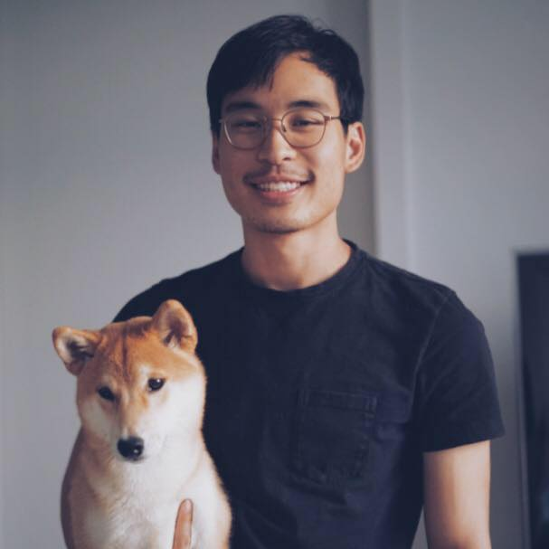

Here's a little bit about me.

Currently based in Boston, I previously worked as a support engineer and a business analyst before leaving these to take a course in architectural studio and pursue UX.
Although I’m just beginning to dip my toes in the world of design, I’m greatly interested in finding thoughtfully designed solutions for hard problems. Outside of design/work, I spent time with my Shiba Inu and enjoy reading, sketching, and skating.
At the moment, ethical consumer goods company, education platforms, and healthcare applications greatly appeal to me. However, I’m ultimately looking for a company values both the wellbeing of the customer and the continuous learning and growth of its employees.